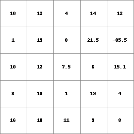
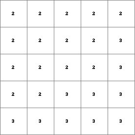

table
Creates on basis of one or more maps a table with a score for each key in the table.
table [options] PCRmap1 PCRmap2.....PCRmapN ResultTable
–unittrue or –unitcell
–degrees or –radians
–columntable or –matrixtable
| -n nrintervals | the number of intervals in the key column for scalar and directional data type (default 8) |
| -h | the intervals in the key column for scalar and directional data type are histogram stretched: intervals are chosen that result in an (almost) equal number of cells into each interval. |
| -H nrhistslots | corresponds with -h, additionally the number of histogramslots (nrhistslots) can be given. With the default value 1024 the number of intervals in each interval will be almost the same, but not exactly. Choosing a larger nrhistslots will improve the accuracy the intervals are chosen, on the contrary it will take longer to determine the intervals. |
| -i Inputtable | the Inputtable is an ascii table that defines the keys used for calculation of the scores. For explanation, see Operation. |
| -0 | remove keys with score zero. All keys, including these with a zero score, are printed in ResultTable. Default: keys with a zero score are not printed. |
change order of columns mode, for column tables only
| -m columnnrmove | |
| Use in combination with -i Inputtable and do not specify input maps PCRmap1, PCRmap2,...PCRmapn. In Inputtable the column with column number columnnrmove is moved to the last column. The table with changed column order is saved as ResultTable. | |
The operation is described by 2 examples.
Operation with a column table (with global option)
Example of a column table generated with the table operation with two input maps and the setting -n 4. The first and second column give the values of PCRmap1 (data type scalar) and PCRmap2 (data type nominal) respectively; the third column contains the score fields:
<0,2] 1 205
<2,4] 1 123
<4,6] 1 142
<6,8] 1 0
<0,2] 2 10
<2,4] 2 350
<4,6] 2 4209
<6,8] 2 2
The maps PCRmap1, PCRmap2,...PCRmapn are PCRaster maps with the same location attributes. In the ResultTable relations between the cell values on these maps are given. Combinations of cellvalues on PCRmap1, PCRmap2,...PCRmapn can be specified in keys or are determined automatically. For each combination (key) the number of cells that matches the combination is counted and added to the key in the ResultTable.
The ResultTable will consist of a number of n+1 columns. The first n columns are key columns, where n is the number of the one or more maps PCRmap1, PCRmap2,...PCRmapn. The key columns consist of key fields; each key field is one value or a range of values. The key fields in the first column have been linked to cell values on PCRmap1, the key fields in the second column to values on PCRmap2, and so on, where the key fields in the nth column have been linked to values on PCRmapn. The last column (column number n+1) contains so called score fields with the scores. Each row in the ResultTable is called a tuple. Of course, a row consists of n key fields and one score field.
For a tuple in the ResultTable, the table operator has counted the number of cells that match the key fields in the tuple. This number multiplied with the area of one cell (if the option –unitcell is set: the number of cells) has been assigned to the score field in the tuple. So for each cell, the value on PCRmapi (where i is 1 to n) has been compared with the ith key field of the tuple. The PCRmapi value of the cell matches the key field if it is equal to the value in the key field or if it is in the range of the key field, in case of a key field consisting of a range of values. If all cell values on the maps match the key fields belonging to them the cell matches the tuple and has been included in the score. This counting has been done for each tuple.
The ResultTable is an ordinary ascii text file. You can display the table by typing the DOS command ‘type’ followed by a space and the table name ResultTable. It has the following lay-out. In a row (tuple), the number of key fields equals the number of maps PCRmap1, PCRmap2,...PCRmapn. The key fields are followed by the score field. The fields are separated by one or more spaces or tabs. A key field is a single value, or a range of values, where a range of values is typed as: ‘[‘ or ‘<’ symbol, minimum value, comma, maximum value, ‘]’ or ‘>’ symbol. The minimum and maximum values are included in the range if square brackets (respectively ‘[‘ and ‘]’) are used, they are not included if ‘<’ or ‘>’ are used. A value which is omitted in the range definition means infinity. Examples of tuples are (assume a cellarea of 100 m2):
[ ,0.05> 37600
An area of 37600 (376 cells of 100 m2) has PCRmap1 values smaller than 0.05.
[-1.42,-0.2> [ ,9> 20800
An area of 20800 (208 cells of 100 m2) has an PCRmap1 value equal to -1.42 or between -1.42 and -0.2 and an PCRmap2 value smaller than 9.
Default the keys are determined automatically, before the counting of cells starts. The way this is done depends on the data type of the maps PCRmap1, PCRmap2,...PCRmapn:
boolean, nominal, ordinal, ldd data type
the key column consists of sets of all whole values between and including the maximum and minimum cell value on the map linked to the key column.
scalar data type
the key column consists of sets of ranges; default 8 ranges of equal width, or specified by the options -n nrintervals; -h or -H nrhistslots.
directional data type
the key column consists of sets of: the number -1 for the value -1 (no direction) and nrintervals-1 ranges for the directions, the number of ranges used can be specified by -n nrintervals; -h or -H nrhistslots; default, 7 ranges of equal width are used.
Example of a matrix table generated with the table operation with the settings –matrixtable and -n 4. Same input maps were used as in the first table (shown above). The fields in the first row contain ranges of PCRmap1; the fields in the first column contain values of PCRmap2. The field in the top left corner is a dummy field. The remaining fields are score fields:
999 <0,2] <2,4] <4,6] <6,8]
1 205 123 142 0
2 10 350 4209 2
The keys can also be given by the user, specifying an Inputtable with the option -i. The Inputtable must have the same lay-out as the ResultTable described above with the exception that the column with the scores does not need to be given (of course it is generated by the table command). The Inputtable can be made using your favourite text editor program or with a spread sheet or word processing program (export as text file!). If you want to change the order of the columns in a table you have made, use table with the option -m. A ResultTable created with table can also be used as Inputtable.
The key columns of Inputtable will be linked to the input PCRaster maps: the first column to PCRmap1, the second to PCRmap2,..., the nth to PCRmapn. If Inputtable contains more columns than the number of n input maps specified in the command line, the (n + 1)th columns and further are deleted by table before execution of the operation. The scores are written to the (n + 1) column.
Each key column must contain key values in the domain of the data type of the map which is linked to the key:
boolean, nominal, ordinal, ldd data type
whole values
scalar data type
values or ranges;
directional data type
the value -1; or values or ranges in the domain of the data type [0,360> (option –degrees), [0,2pi> (option –radians).
operation with a matrix table (with the option –matrixtable) With the option –matrixtable set, with two maps PCRmap1, PCRmap2 specified in the command line, ResultTable will be a matrix table instead of a column table. If the option –matrixtable is set and a different number of PCRmap1, PCRmap2,...PCRmapn is specified, a column table is generated and the operation is performed as described above.
The matrix will have the following lay-out. The first field in the top left corner has no meaning, it is a dummy field. The first row consists of this dummy field and the key fields which have been linked to PCRmap1. The first column consists of the dummy field and the key fields which have been linked to PCRmap2. The remaining fields in the matrix are score fields. Each score field contains the number of cells that have an PCRmap1 value of the key field of its column and have an PCRmap2 value of the key field of its row.
If in addition to –matrixtable, the option -i Inputtable is used, the input table must have the following lay-out. The first row of Inputtable consists of a dummy field and the key fields which will be linked to PCRmap1. The first column consists of the dummy field and the key fields which will be linked to PCRmap2. The remaining fields must be filled in with arbitrary values; these will be replaced by the scores.
This operation belongs to the group of Point operators; relations in tables
table -n 4 PCRmap1.map Result1.txt
| PCRMap1.map | Result1.txt |
|  | [-85.5 ,-58.75> 1
[-58.75,-32 > 0
[-32 ,-5.25 > 0
[-5.25 ,21.5 ] 24
|
table -n 4 -h PCRmap1.map Result2.txt
| PCRMap1.map | Result2.txt |
[-85.5 ,6.03516> 7
[6.03516,10.0059> 7
[10.0059,13.0361> 5
[13.0361,21.5 ] 6
|
table -i Input.txt PCRmap1.map PCRmap2.map Result3.txt
| Input.txt | PCRMap1.map | PCRMap2.map | Result3.txt |
<,6] 2
<6,> 2
<,6] 3
<6,> 3
|
 | < ,6] 2 4
<6, > 2 11
< ,6] 3 3
<6, > 3 7
|
table -m 2 -i Input2.txt Result4.txt
| Input2.txt | Result4.txt |
2 <1,5] 2 0
2 <5,10] 1 1
2 <10,20] 3 1
3 <20,30] 4 1
|
2 2 0 <1 ,5 ]
2 1 1 <5 ,10]
2 3 1 <10,20]
3 4 1 <20,30]
|